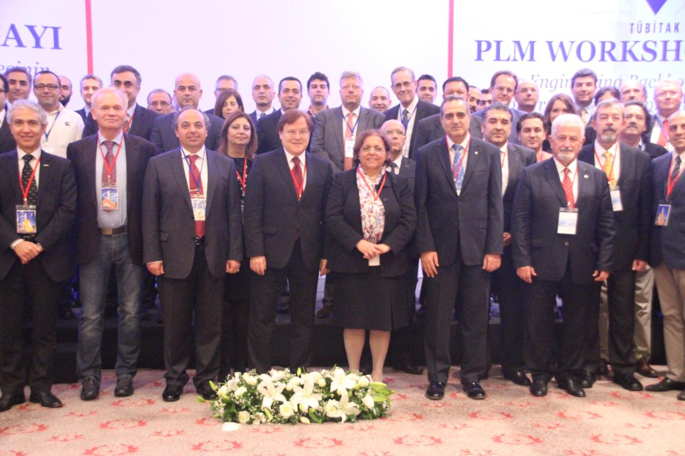
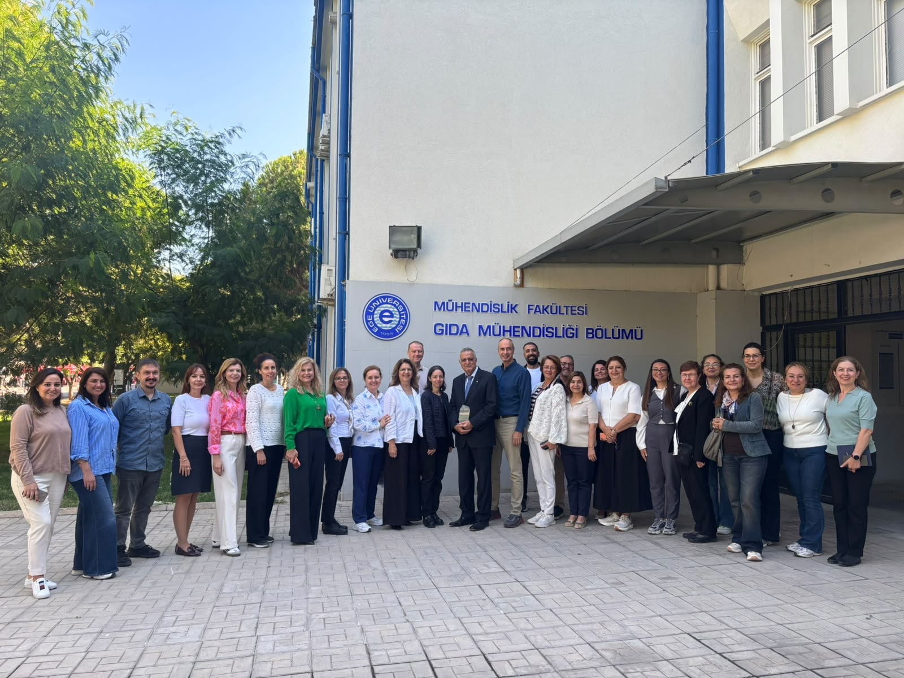
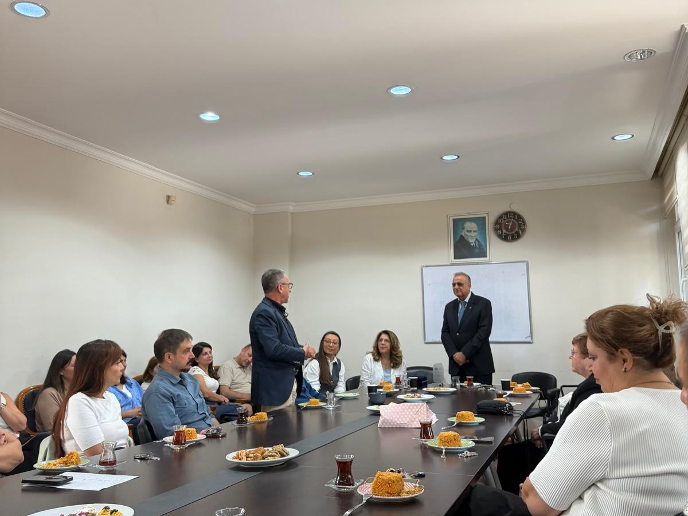
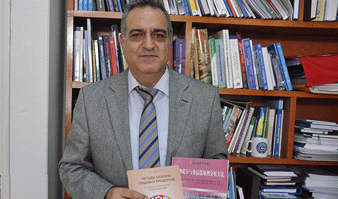

Gıda kimyası, beslenme ve güvenlik alanında bilim üretimi.
Prof. Dr. Semih Ötleş, Ege Üniversitesinde lisans eğitimini 1980’de, yüksek lisansını 1985’te ve doktorasını 1989’da tamamlamıştır. 1991–1992 yıllarında Belçika’daki Ghent Üniversitesinde doktora sonrası araştırmalar yürütmüş; 1993’te doçent, 2000’de profesör unvanını almıştır.
Gıda kimyası, fonksiyonel gıdalar, enstrümantal gıda analizi ve nanobilim üzerine çalışan Ötleş, ulusal ve uluslararası yayınları, kitapları ve bilimsel iş birlikleriyle alana katkı sunmuştur. Ege Üniversitesinde 2003–2009 yıllarında Mühendislik Fakültesi dekan yardımcılığı, 2012–2016 yıllarında ise rektör yardımcılığı görevlerini üstlenmiştir.
Akademik yolculuk
Bilimsel çalışma odakları
Bilim, yönetim ve iş birliği
Ege Üniversitesindeki görevlerden uluslararası bilimsel topluluklara uzanan çalışmalar.







Diğer kareler için yana kaydırın.
Kitaplar ve akademik eserler

Gıda bilimi, farklı dillerde.
Rusça yayımlanan gıda kitabıyla Prof. Dr. Semih Ötleş.
Kitapları keşfedin